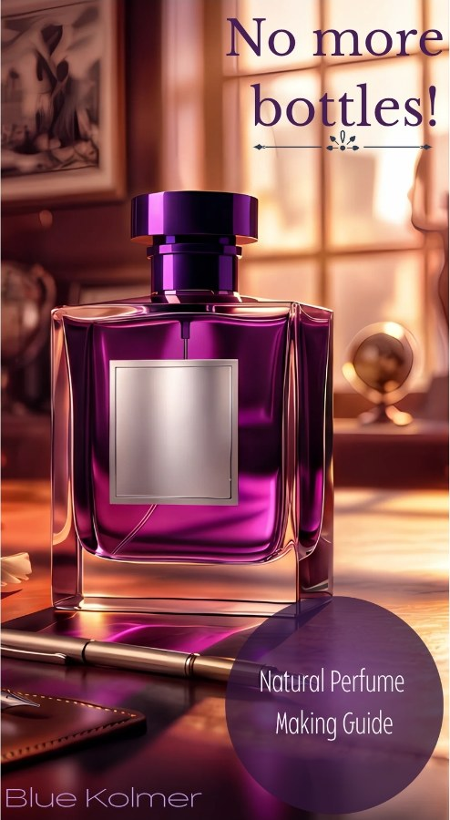

No More Bottles!
Natural Perfume Making Guide
The Wake-Up Call
Your skin is your body's largest organ—it drinks in whatever you put on it.
Commercial perfumes rely on synthetic fixatives, phthalates, and hidden chemical cocktails masked under the generic term "parfum". These endocrine disruptors interfere with your hormones and health every single day.
It’s time to break free from mass-produced corporate bottles and choose 100% clean, botanical ingredients.